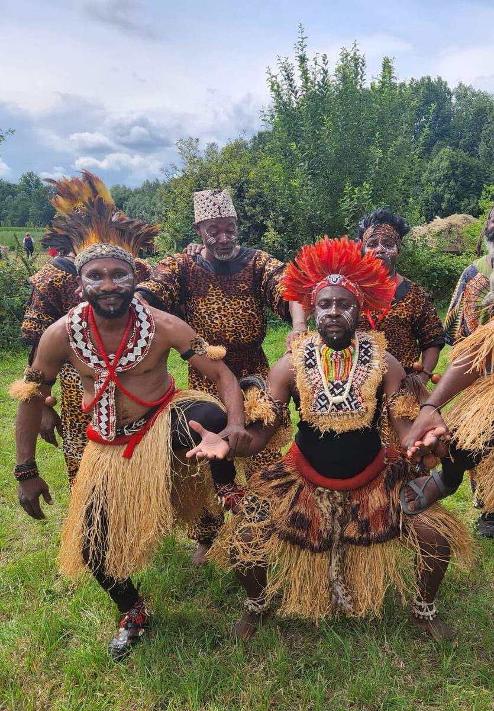
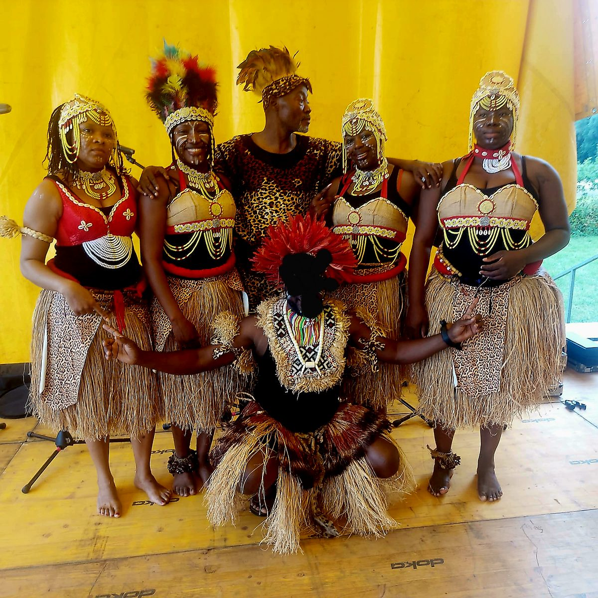
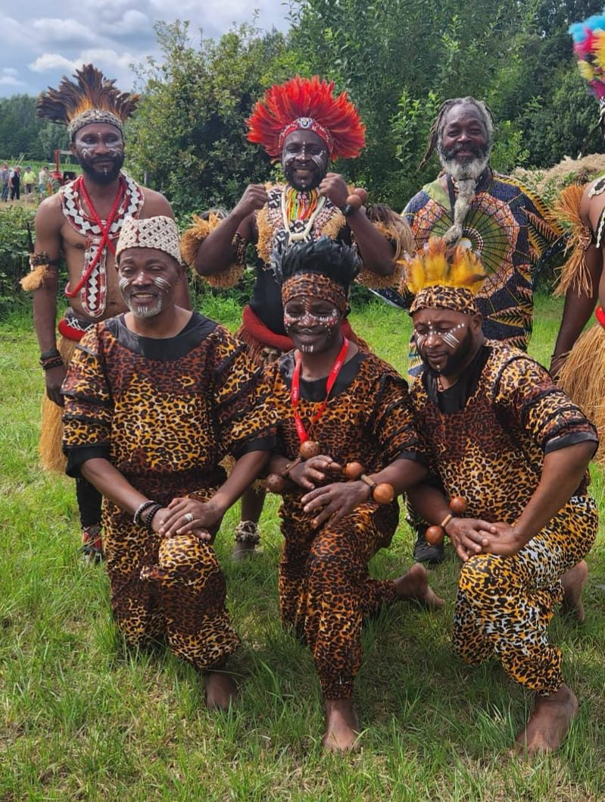

19:00
Performance
Congolese dance, song, percussion and balafon by Groupe Furaya.

Saturday 19 September · Shoonya Dance Centre
A live performance of Congolese dance, song, percussion and balafon, followed by three short initiation classes that invite the audience onto the floor.
Groupe Furaya / MONYAMA
A performance rooted in rhythm, heritage and collective energy.
Groupe Furaya brings together dance, singing, percussion and balafon in a style that moves between traditional and contemporary forms. The performance draws on rhythms and traditional songs from the Democratic Republic of Congo, carried by live instruments including tam-tams, lokole, maracas, balafon and other percussion.
The evening is built as a performance first: a 70-minute stage work with dancers, singers and musicians. After a short reset, three artists from the group lead short taster classes so the audience can experience the rhythms through movement.


Evening format
The audience watches the full performance before joining three short initiation classes led by Joseph, Bawayi and Awa.
19:00
Congolese dance, song, percussion and balafon by Groupe Furaya.
20:10
A short transition before the taster classes begin.
20:30
Three 15-minute African dance tasters, planned sequentially.
21:15-21:30
Time for transitions, applause, questions and a soft landing.
Taster classes
Each initiation lasts 15 minutes and is designed as an accessible introduction after the performance.
Bawayi
A short introduction to movement rooted in Congolese tradition.
Joseph
A high-energy taster of modern Congolese dance language.
Awa
An initiation into a dance style from Burkina Faso, taught in English and French.
Tickets
The ticket includes the performance and the three short initiation classes after the show.
Atmosphere


FAQ
The main event is a performance. The three short initiation classes happen after the performance.
No. The tasters are short introductions and are meant to be accessible. You can also come for the performance experience.
Joseph will teach in a mixed-language format, Bawayi in French, and Awa in English and French.
Shoonya Dance Centre is at Stapelplein 41, 9000 Gent, a short walk from Gent-Dampoort station.